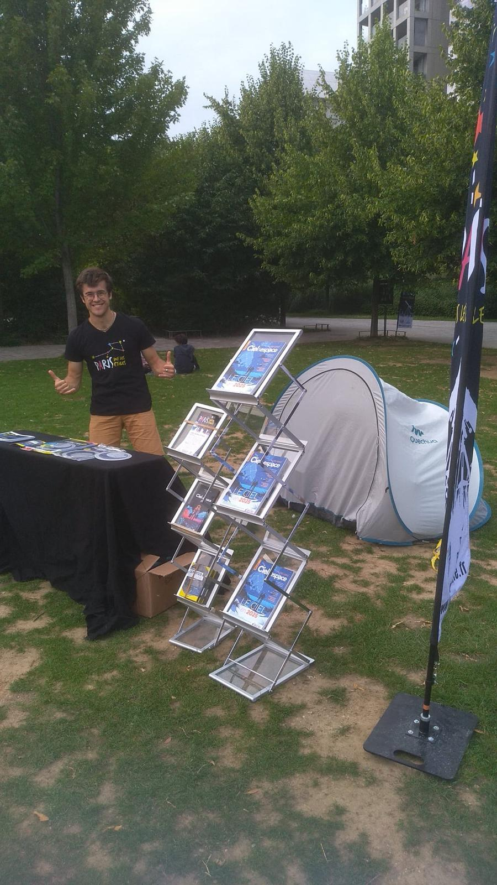

Outreach

From June to August 2025, I had the opportunity to participate in several evenings of "Paris sous les étoiles", an event organized by the Association Française d'Astronomie (AFA). As a volunteer host, I showed visitors how to use a telescope and discussed astronomy with them. Every year, this event brings astronomy and astrophysics to the general public in several parks across Paris.